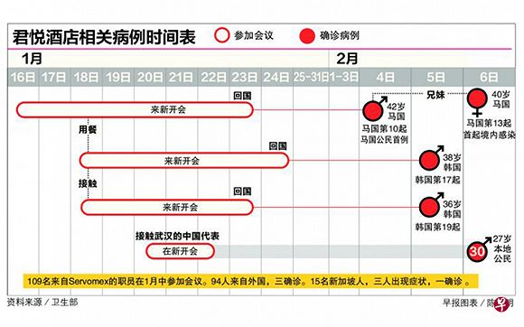

新冠肺炎确诊病例达50，“不戴口罩”的新加坡慢了吗？
原文链接 备份链接 图片来源：图虫 记者：潘金花 “ 新加坡卫生部长说，“健康的人戴口罩，往往会给我们一种错误的安全感。” ” 新加坡最大的商业银行星展银行（DBS）12日证实，该银行一名职员确诊感染新型冠状病毒。截至当天中午，新加坡确诊 …
 图片来源：图虫
图片来源：图虫
记者 ：安晶
“
只有找到传染源头才能确定传染链。
”
1月20日到22日，来自全球各地的109名员工齐聚新加坡君悦酒店，参加英国气体分析仪器公司仕富梅（Servomex）的内部会议。
期间，一个八人的舞狮团前往会场助兴，进行了5分钟左右的表演。
就在这次常规的会议结束后一周多，参会的一名马来西亚员工被确诊感染新型冠状病毒。该男子的妹妹和岳母也被传染。
随后，与该男子曾一同用餐的两名韩国员工被确诊感染；四名新加坡员工也出现症状，其中三人已确诊。
目前最广为人知的传染案例要数参会的英国员工沃尔什（Steve Walsh）。沃尔什离开新加坡后前往了法国滑雪胜地，后从日内瓦乘飞机返回英国。返回英国后在当地社区参加了瑜伽课，还去了一家酒吧。
最终，被确诊的沃尔什又传染了来自英国、法国和西班牙三国的11人。
据《联合早报》和路透社2月13日报道，新加坡政府和世界卫生组织正在对君悦酒店的这次会议展开调查。但截至目前，依然有一个关键问题没有解决：究竟谁是造成这场国际传染的“零号病人”。
调查人员表示，找出“零号病人”非常重要，因为只有找到传染源头才能确定传染链。
参加1月会议的109名员工中，仅有15人为新加坡当地人，其余94人分别来自中国、马来西亚、韩国、美国、日本以及欧洲国家。这94人在会议结束后均已离开新加坡。
此前有一条看似明确的线索：参会的中国员工中有一人来自湖北武汉。
但据仕富梅公司发言人透露的信息，参会的十多名中国员工没有一个确诊病例。新型冠状病毒感染后的潜伏期约为14天，而现在距离会议已经超过了14天。
据世卫组织的报告，截至2月13日，参加过会议的员工中共有七人被确诊。其中新加坡三人、韩国两人、英国一人、马来西亚一人，没有中国员工。

图片来源：世卫组织
最初的线索断了之后，除中国员工之外的其他员工在新加坡时的动向也成为了关注重点。
据新加坡卫生部公布的信息，第一名确诊的马来西亚员工早在会议开始前的1月16日就抵达新加坡。该员工曾游览过滨海湾花园，到克拉码头、乌节路等商场用餐。
被确诊的两名韩国员工也提前两天、于1月18日抵达新加坡。其中一名韩国员工还与马来西亚员工一同用餐。

图片来源：联合早报
与此同时，在会议开幕当天到现场助兴的舞狮团队和君悦酒店也成为了关注对象。
舞狮团团长表示，当时的舞狮表演仅进行了五分钟左右。打鼓的团员在会场外，进入会场的团员戴着狮头和狮身，没有直接与参会者接触、也没有与他们一同用餐。
这名团长在2月7日接受采访时指出，参加1月20日表演的团员至今没有出现症状。但以防万一，团员随后还将进行体检。
君悦酒店则表示，酒店员工目前没有人出现新型冠状病毒感染症状。进出酒店的员工和承包商每天都会进行体温测量。
管理人员称，自从1月的会议出现疫情后，酒店进行了深度清洁，还聘请专门机构对可能受影响的客房进行彻底消毒。而直到现在，酒店依然不知道参会人员到底是“如何、在哪里、什么时候”被感染的。
世卫组织认为，目前判断君悦酒店事件是否构成“超级传播事件”为时尚早。
世卫组织全球疫情和警报响应网络主席费舍尔（Dale Fisher）坦言，无法找到传染的源头“确实让我们不安”，而不知道源头所在将使防控措施的效果减弱。
新加坡国立大学传染病研究专家覃毕雅（Paul Tambyah）则推测，传染源可能是参会者之外的人，“大家都认为是参会者，但也可能是清洁工、招待”等其他人。
新加坡卫生部长颜金勇已经表示，当局将继续追查此次事件的“零号病人”，直至疫情结束。
但随着时间的推移，追查工作的难度将越来越大。颜金勇承认，另一种结果是“我们可能永远都无法找到零号病人”。

原文链接 备份链接 图片来源：图虫 记者：潘金花 “ 新加坡卫生部长说，“健康的人戴口罩，往往会给我们一种错误的安全感。” ” 新加坡最大的商业银行星展银行（DBS）12日证实，该银行一名职员确诊感染新型冠状病毒。截至当天中午，新加坡确诊 …
原文链接 备份链接 关于征用期间的费用问题，刘杰元表示，“他们没有讲，我也没有提。反正闭店也是要损失，不如拿出来给他们（医护人员）住，人家也是来支援我们的嘛，大家都希望疫情早点过去。” 刘杰元（左一）在酒店前台和工作人员交流。图片来源：受 …
原文链接 备份链接 为防止居家隔离造成交叉感染，从根本上控制感染源，武汉开始对确诊、疑似、发热及密切接触者进行集中收治和隔离。 具体执行中，劝服人员前往隔离点的工作很难。他们期待：能够对患者进行治疗，或者形成一条入院检测和就医的绿色通 …
原文链接 备份链接 童言是生活在新加坡的三明治专栏作者。自1月23日确诊第一例“新型冠状病毒肺炎”病例以来，目前新加坡已确诊18个病例，在海外确诊数据中排名第三，仅次于日本、泰国。 这场“肺炎”疫情牵动着许多在海外中国人的心绪。华人群体 …
原文链接 备份链接 01.02.2020本文字数：1976，阅读时长大约3分钟 导读：这次疫情对于餐饮行业来说，可以说是灭顶之灾，基本上（餐饮行业）就陷入停滞的状态了。 作者 | 第一财经 金叶子 乐琰 春节是餐饮酒店从业者眼中带动全年 …